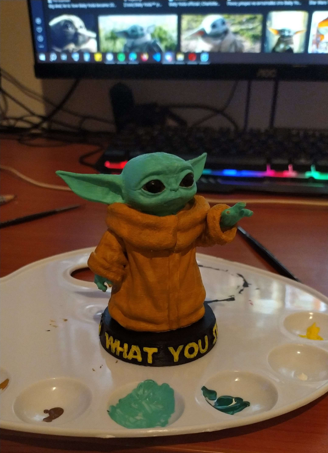
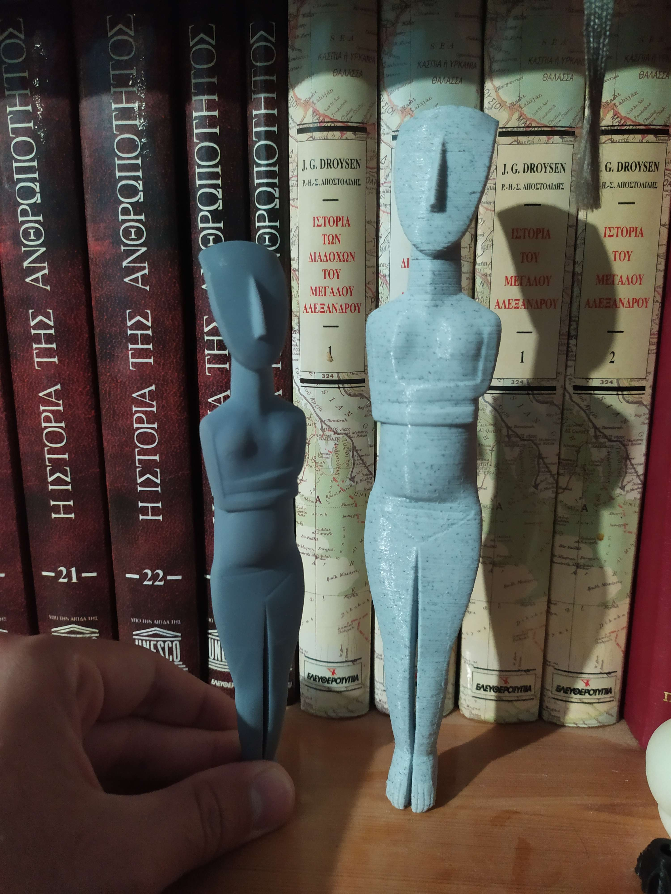
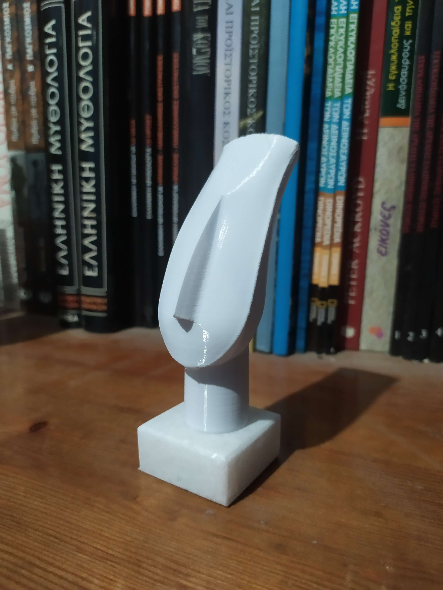
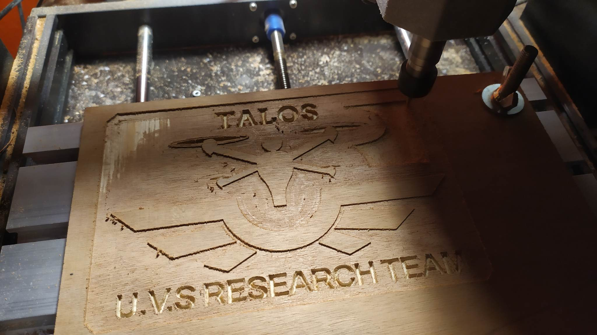

Έχω την ικανότητα να σχεδιάζω και να εκτυπώνω τις δικές μου τρισδιάστατες φιγούρες και πλαστικά εξαρτήματα (ελεύθερα και γραμμικά μοντέλα). Παρακάτω μπορείτε να δείτε μερικά από τα παραδείγματα της εργασίας μου.
Εκτός του ότι είναι βαμμένο με τα απαραίτητα βασικά χρώματα, μπορεί να παρατηρηθεί ότι έχει γίνει χρήση εφέ ψεύτικων σκιών και επιφωτίσεων ώστε το μοντέλο να φαίνεται πιο φωτορεαλιστικό.
Εμπνευσμένα από τον τόπο καταγωγής μου, τη Νάξο, χαρακτηριστικό σχέδιο που είναι παραπλήσιο με τα ειδώλια από τον αρχαίο κυκλαδικό πολιτισμό.
Παραπλήσιο με το προηγούμενο σχέδιο, αλλά με χρήση βάσης από μάρμαρο Νάξου, ώστε να δώσει ένα πιο εκλεπτισμένο αποτέλεσμα.
Έχω ερασιτεχνικές γνώσεις χρήσης CNC, όπου με αυτές έχω δημιουργήσει την παρακάτω επιγραφή.
